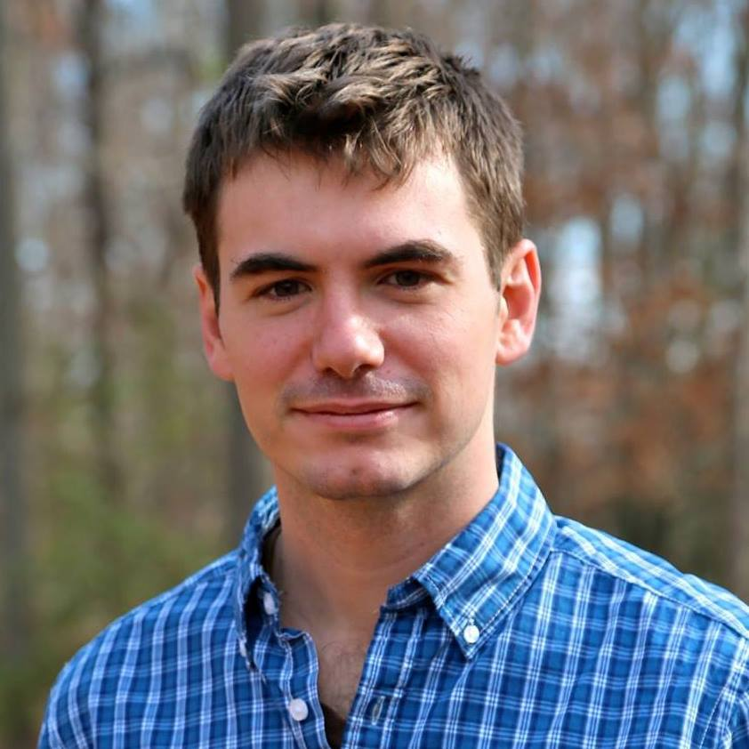

Event Sponsors

Want to support scientific divulgation?
Sponsor us!
munichscienceslam@gmail.com
Contact Us
Want to know more?
Send us an email!
munichscienceslam@gmail.com
Founders
Alexandra Klein
Alexandra was born and raised in Bavaria and studied in Munich and Berlin. Currently, she is a doctoral candidate at the Max Planck Institute of Neurobiology in Munich. In her research she aims at understanding how the brain creates and regulates emotions. Her heart beats for communicating the amazing world of (neuro)science to people who are not necessarily as nerdy as she is.
Nicholas A. Del Grosso
An American systems neuroscientist, working at Max Planck Insitute of Biochemistry in Munich, Germany. During his PhD Nick researched closed-loop technologies for the purpose of understanding and modifying brain function. Passionate about empowering scientists and engineers through programming and data science training, Nick has six years of experience organizing workshops, courses, and training communities in Germany and abroad.

Crew
Amanda Monte
Amanda is the hummingbird girl. She is on her last year of Ph.D. (hopefully, says she!) in which she investigates how hummingbirds use sound to communicate also in the Max Planck Institute for Ornithology. Communication seems her thing, so she joins the science slam crew with her communicative skills.
Lisi Huber
Lisi finished her PhD in a structural biology lab at the Gene Center of the LMU in 2018, where she is now working as a Postdoc. She is not only fascinated by protein structures, but also passionate about science communications. Since she enjoys reading and communicating science news on social media, she supports the science slam crew with her communicative and advertising skills.
Marita Vater
Marita is working at the Max Planck Society head quarter. She joined the Munich Science Slam team because she loves our idea of spreading science to everybody. The way how the speakers get trained for their presentation makes it possible for everyone to understand their research. With her positivity and engagement, she is our newest and precious addition to the organization team!
Laura Sotillos Elliott
Laura was originally born in Spain and studied her Bachelor’s in Biochemistry in her home city and her MSc in Neurosciences at the GSN in Munich. Fascinated by how the brain processes and creates feelings she decided to specialize in psychiatry for her PhD and has just started working at the MPI for Psychiatry in Munich. She is convinced that people are interested in science, it’s just that scientists have a hard time making their knowledge accessible to the general public and she wants to be part of the global team offering scientific knowledge to whoever is willing to learn. She loves to write about science (and other topics) and has her own (quite new) blog.
Sukanya Olkar
A post-graduate in Biochemistry from India, she is currently exploring the Translational Cancer research arena in Munich, Germany. She has a master degree and professional experience of 3 years in academics and corporate. Academics is her preferred zone and she loves spending time in lab. She also likes to write and tell stories. Combining this interest with science is her long term goal. Apart from science, photography, wildlife, reading, cycling and cooking is what she enjoys.
Caterina Macrini
Cate is an Italian girl and studied in Italy, Netherlands and Germany. She is currently a PhD student at the LMU, trying to understand how autoantibodies bind to a myelin protein in patients with autoimmune diseases of the nervous system. She loves to listen to clear and engaging science talks of different fields which is why she joined the Munich Science Slam. She wants to improve her communications skills and help other scientists to deliver their science at their best. In her spare time, far from science, she loves travelling and create unforgettable memories by taking pictures. She wants to bring her photography “skills” to the science slam events, to show how great they are to people that still haven´t attended.